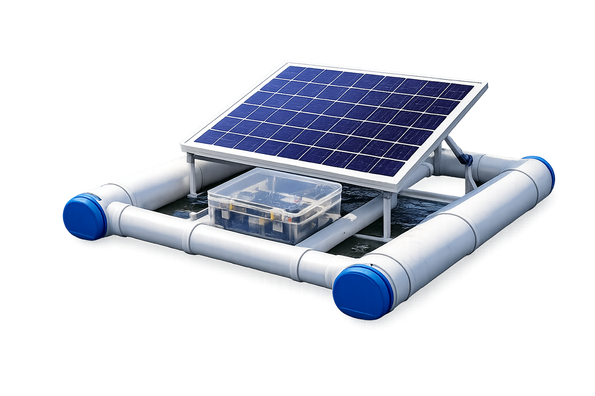

Somos o Oceanic Engineering Society — UFF, o primeiro capitulo do IEEE dedicado à Engenharia Oceânica no Brasil. Nascemos com uma missão clara: aproximar estudantes das tecnologias e desafios que moldam o futuro dos oceanos.
.png)
ARANDÚ
boia de monitoriamento

Objetivo:
O projeto Arandú propõe o desenvolvimento de um protótipo de bóia inteligente voltado ao monitoramento da qualidade da água da Lagoa de Piratininga, localizada em Niterói (RJ). O nome Arandú deriva de uma palavra de origem tupi associada ao conceito de conhecimento e sabedoria, refletindo o objetivo do projeto de gerar e compartilhar informações ambientais que contribuam para a compreensão e preservação dos ecossistemas costeiros.A proposta surge da necessidade de ampliar o monitoramento ambiental da região, especialmente após a implementação do Projeto Parque Orla Piratininga (POP), que introduziu soluções baseadas na natureza, como jardins filtrantes, para reduzir a poluição proveniente dos rios que deságuam na laguna.
Como funciona?
A boia é concebida para operar de maneira na superfície da água, integrando sensores ambientais e tecnologia de transmissão de dados. A proposta é que as informações coletadas possam ser acessadas remotamente, oferecendo uma visão clara e atualizada sobre as condições do ambiente monitorado. O painel solar reforça esse conceito de autonomia, permitindo que o equipamento opere de forma contínua e sustentável.
DADOS DO EQUIPAMENTO
Gostou do nosso trabalho?
Entre em contato ou acompanhe as nossas redes sociais!